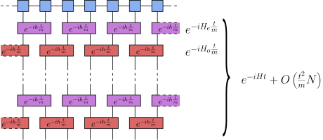
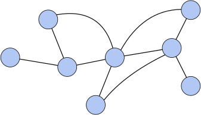

8. Tensor Network Algorithms#
Having introduced tensor networks in general, with a focus on the case of MPS, we now turn to the question of how to use them to solve specific problems. While a large number of tensor network algorithms have been developed, many of them more advanced and/or efficient than the ones we will discuss here, we will focus on a few simple algorithms that are easy to understand and implement. Importantly, these algorithms are also the building blocks of more advanced algorithms, for example in higher spatial dimensions.
Effectively, we have already seen how to use MPS to compute expectation values or correlation functions, or derive all kind of properties. Here, we focus on how to obtain the desired MPS in the first place. In other words, given a certain problem, how can we optimize an MPS, or a more general tensor network, to solve it?
8.1. Simulating Quantum Systems#
As a first example, let us consider the problem of simulating a quantum system. We can formalize this idea as follows: Given a Hamiltonian \(H\), and some initial state \(\ket{\psi_0}\) at time \(t=0\), is there a way to compute the time-evolved state \(\ket{\psi(t)} = e^{-i H t} \ket{\psi_0}\) at some later time \(t\).
In general, this is a very hard problem. For example, one could naively try to compute the matrix exponential, but this quickly becomes prohibitively expensive, as the dimension of the Hamiltonian scales exponentially with the number of particles. However, for physically relevant systems the Hamiltonian does not consist of a random matrix, but rather exhibits additional structure that can be used to simplify the problem.
8.2. Time-Evolving Block Decimation (TEBD)#
A particularly powerful example can be found for systems with local interactions, where the Hamiltonian is of the form:
where \(h_{ij}\) denotes a local operator, acting only on a small number of sites. In this case, although \(e^{-i H t}\) is unfeasible to compute, each of the constituent terms act only on a much smaller subsystem and therefore \(e^{-ih_{ij}t}\) can be computed efficiently. However, as these terms generally do not commute, we cannot simply apply them one after the other. Instead, we can use the first-order Suzuki-Trotter decomposition to approximate the time-evolution operator, which states that for any two Hermitian operators \(A4 and \)B\(, and any real number \)\Delta t$, we have:
If we now split the full time interval \(t\) into \(m\) steps, we obtain the approximation
where the approximation error can be managed by choosing a sufficiently large \(m\).
Note
There actually exist entire families of such exponential product approximations up to a given order [HS05]. For our purposes however, it is sufficient to illustrate a simulation procedure using this first-order approximation.
8.2.1. Example: One-Dimensional Nearest-Neighbor Hamiltonians#
We can put the discussion above into practice by applying it to the example of a nearest-neighbour Hamiltonian on a one-dimensional lattice:
where \(N\) is the number of sites and we are assuming periodic boundary conditions. We now want to simulate the dynamics of this Hamiltonian in an efficient way using the aforementioned approximation Eq. (). The simplest way to do this is to split the local terms into two groups, where terms within a group commute with each other, but not with terms in the other group. For example, we could split the Hamiltonian into even (\(H_e\)) and odd terms (\(H_o\)):
It is a simple exercise to show that the local terms within a group commute, as they act on non-overlapping sites. Therefore, if we can find a MPS representation of the initial state, the procedure for simulating the time evolution is as follows:
{kind=link}
This procedure does not solve the problem as-is, as evaluating this network exactly would still require a bond dimension which grows exponentially with the number of layers \(m\). Instead, we can retain an efficient description by locally truncating the bond dimension, by computing an SVD an retaining only the largest \(\chi\) singular values.
{kind=link}
8.3. Groundstate Search#
Another important problem in quantum physics is the determination of the groundstate of a given Hamiltonian. Again, this can be made more formal as follows: Given a Hamiltonian \(H\), is there a way to find the state \(\ket{\psi_0}\) that minimizes the expectation value \(\bra{\psi} H \ket{\psi}\).
In fact, this problem faces the same difficulty as the one discussed above, namely that the naive solution strategy involves finding the eigenvector of the Hamiltonian matrix with the smallest eigenvalue, which again scales exponentially with the number of particles. However, as before, we can exploit the structure of the Hamiltonian to find a more efficient solution.
8.3.1. Imaginary Time Evolution#
In fact, the problem of finding groundstates can be mapped to the problem of simulating dynamics, by making use of a trick known as imaginary time evolution. The idea is to consider the time evolution operator \(e^{-i H t}\), but to replace the real time \(t\) by an imaginary time \(\tau = i t\). If we now consider the limit \(\tau \to \infty\) and deal with the normalization appropriately, we can see that applying the evolution operator to a state \(\ket{\psi_0}\) will effectively project it on its lowest energy eigenstate, as all other eigenstates will be damped out exponentially. In other words, we can find the groundstate of a Hamiltonian by simulating its dynamics for a sufficiently long imaginary time.
where we have made use of the fact that all but the first term in the sum are damped out. In this regard, the groundstate search problem can also be tackled with the TEBD algorithm discussed above, by simply replacing the real time \(t\) by an imaginary time \(\tau\) and continuing time-evolution until convergence is reached.
8.4. Conclusion#
We have now seen a first example of algorithms that can be used for optimizing tensor networks, either to simulate dynamics or to find groundstates. We conclude by mentioning that this is only the tip of the iceberg, and that there exist many more algorithms that can be used to solve a variety of problems.
Outlook
To close out this lecture, we briefly comment on the higher dimensional generalizations of the TEBD procedure and the difficulties this brings with it. For local quantum Hamiltonians in higher dimensions we can follow a similar procedure, where we split the full Hamiltonian into sum of parts that each only contain non-overlapping local terms. Time evolution can then be simulated by applying a similar sequence of layers, where in each layer we evolve with all local operators in a given Hamiltonian part in parallel.
The problem with this approach however is that the local update step tebd_trunc is ill-conditioned for higher-dimensional networks if the full quantum state is is not taken into account for the truncation. Indeed, while in the one-dimensional case the rest of the network surrounding the sites we want to update can be brought into account exactly by working in appropriate gauge, this is not possible in general. Consider for example a general network where want to apply some update to the central site,
{kind=link}
Since this network contains loops, there is no way to exactly capture the surrounding network in general. One instead has to resort to approximation techniques for the environments of a given update site, where the quality of the environment approximations directly affects the stability of the local update. The simplest way of doing this is to use the so-called simple update procedure [JWX08] where all loops in the network are simply ignored and the environment is approximated by a product state,
{kind=link}
More accurate results can be obtained by taking into account the full quantum state of the system in each local update by means of the full update procedure [JOrusV+08]. However, this gain in accuracy comes with a substantial increase in computational cost due to the full environment approximation at each step.